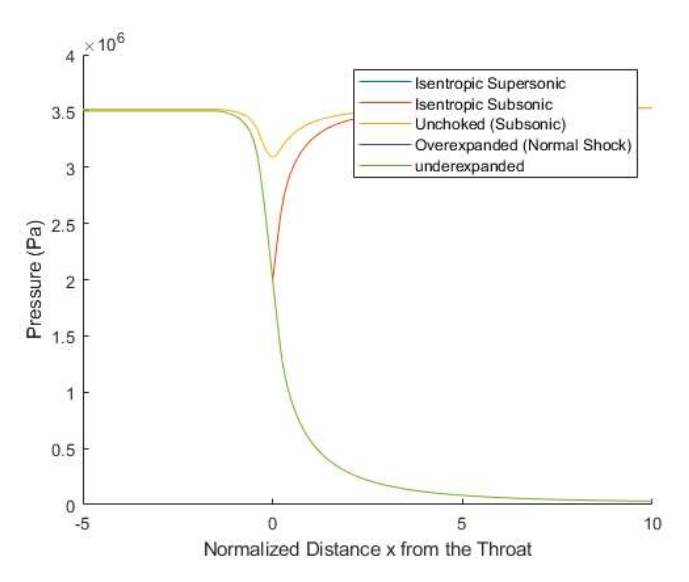

Matlab
Pictured below is one of the outputs for a propulsion project. The objective was to evaluate the ideal nozzle flow characteristics at all points within a standard contoured de Laval nozzle. Some aspects of this program are solving for stagnation conditions within the nozzle and using a bisection solver function to solve for Mach number.
Other Matlab projects include creating a poker game simulation where the user can play poker against a computer and will be dealt a random hand and can bet different sums of money. Another program I created was to calculate Hohmann transfer orbits. There are many other similar Matlab programs many of which are used for data analysis covered in the Mechoptronics section.
Simulink
My Simulink experience is mostly comprised of my time at Lockheed Martin as an intern. Unfortunately, this simulation is proprietary and cannot be shown here.